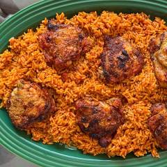
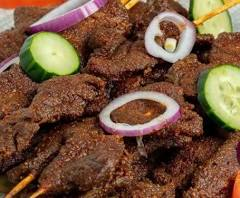
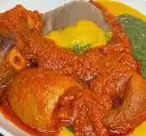

Jollof Rice
Nigeria's most loved rice dish cooked with tomatoes, peppers, and spices.
Discover popular Nigerian dishes, local restaurants, and unforgettable food experiences across Lagos.
Explore Foods
Nigeria's most loved rice dish cooked with tomatoes, peppers, and spices.

Delicious spicy grilled beef served with onions and pepper mix.

A traditional Yoruba swallow best enjoyed with ewedu and gbegiri.

Modern Nigerian cuisine with exceptional local flavors.

A unique blend of culture, art, and authentic Nigerian food.

Popular seafood restaurant offering fresh meals and ocean-inspired dining.